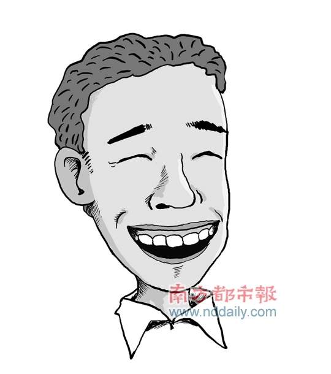
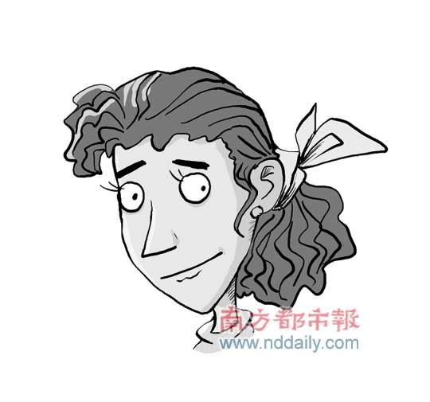
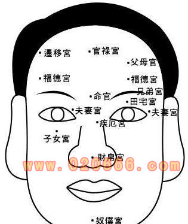
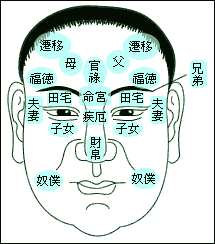
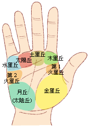
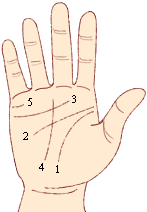

一、鼻型分类与财运
传统有「男人鼻子看财运、女人鼻子看夫运」之说。鼻居面中，为财帛宫，其型态被细分多类。
鹰钩鼻
鼻梁高挺、鼻尖带勾。传统认为此类人善攻心计，从政是把好手；但行事易刻薄、教条、自以为是。属中性评价，不吉不凶。
朝天鼻
鼻孔外露，民间称「散财童子」。从正面能见鼻孔者，传统认为不易聚财，纵有积蓄也易流失，人际运亦平平。
歪鼻
鼻子不正。相学重「五官端正」，而鼻居正中、起决定作用；鼻歪者传统认为心术易偏，观感亦欠佳。
短鼻
鼻子与脸型相比过于短小。传统认为升迁发展有限，创业吃力、难以获利，宜三思后行。
段鼻
鼻梁「一段一段」（侧面看似断裂，非「断鼻」）。传统主人生坎坷、婚姻不顺、财运差、身体欠安、精神抑郁；男易「积财容易守财难」，女多主婚姻问题。
蒜头鼻
鼻头圆润但在脸上显得过大。此类鼻子虽大却不易聚财，部分人或有嗜赌倾向。
传统认为：男人宜山根高、鼻梁坚挺、鼻头圆润、两翼有肉，方有好财运；女人鼻子宜笔挺而不过高，鼻头圆润、鼻翼不宜过大，方有旺夫之相。皆以「鼻头有肉、端正不偏」为要。
二、唇相详解
嘴唇不仅体现生命活力与个人能力，也显现个性：上唇象征积极性与父性，下唇象征消极性与母性。
| 观察点 | 形态 | 传统解读 |
|---|---|---|
| 嘴角 | 嘴角上翘（不笑时亦微微向上） | 开朗乐观；配下巴圆润，主晚运较佳。 |
| 嘴角向下（形如覆舟） | 悲观、挑剔，易口不择言。 | |
| 厚度 | 唇厚 | 重情义、讲信用、忠厚可靠；过厚则流于愚钝、不懂转弯。 |
| 唇薄 | 冷静现实、能言善道、口才佳；过薄则或冷酷无情。 | |
| 上下比例 | 上厚下薄 | 为佳相：自信、能力强、重情重义、财运不错。 |
| 上薄下厚 | 自信不足、心思善变、情绪化；传统主贫。 | |
| 轮廓 | 棱角分明 | 本分、有原则、言出必行，有聚财之相。 |
| 轮廓不清 | 意志薄弱、言行无原则，易招是非。 | |
| 唇色 | 红润 | 健康良好、精神饱满、人缘佳；发黑发乌则宜关注健康。 |
三、脸型分类（头面型）
古语云「头为诸阳之尊，面为五行之宗」。头面型被归纳为九类，各有其性情特质。
四方型（实业家型）
前额上部方形、方下巴。多出将领、实业家、运动家、探险家；精力充沛、好动冒险、讲求实际，缺点是懒于思考、不喜读书。
长方型
头窄脸长，似长方形。擅长外交、喜交际、机警有礼；缺点缺魄力执行力、不善理财。
圆脸型
头面圆润，所谓「心广体胖」。乐观和气、可亲有趣，擅长行政管理、是理财天才；缺点是贪图享乐、易懒惰。
三角型（智慧型）
前额高宽、下巴尖，呈倒三角。智力灵活、善推理、富创造，多出思想家、设计家；缺点是体力较弱、不惯劳力。
凸出型
前额后倾、高鼻梁、唇突出、下巴短缩。智力极佳、思想快、行动敏捷、善观察；缺点是性急冲动、欠深虑、易失言。
凹进型
前额上端突出、眼眉平、鼻低、唇短、下巴突出。思想行动皆缓慢，但谨慎从容、三思后行，能忍耐、有持久力。
平直型
前额直、直鼻、嘴与下巴平直，侧面成一直线。性格介于凸出与凹进之间，中性，易犹豫不决。
上凸下凹型
前额后倾、眼眉高、高鼻梁、唇短、下巴长突。思想快、行动慎重、有魄力，是领袖之才；缺点是易专制固执。
上凹下凸型
前额突出、眼眉平、鼻低、唇突出、下巴短缩。行动快于思想、有冲劲；缺点是轻率疏忽、易冲动、不重实际。
四、十二宫详解
十二宫以不同宫位表征人生成败吉凶。以下为流传较广的一种十二宫版本（含「父母宫」），与本站基础篇所列略有出入，可互相参看。
命宫
双眉之间、山根之上（印堂），为「命运总开关」。光明如镜则一生顺遂；陷落不平、被眉侵、有皱纹或疤痕，主运势起伏。
财帛宫
指鼻（含天仓、地库）。高隆丰厚、圆挺直为佳，主事业有成、财富聚积；歪斜弯钩、尖薄露骨露孔皆为缺点，主性格与财运之失。
兄弟宫
指眉（含龙虎角、额角）。看兄弟姐妹、朋友同事的感情，亦旁及作事的勇气与胆色。
田宅宫
现代多指眉眼之间的上眼睑（精舍、光殿）。广宽丰盈为佳，利置产、人缘好；陷窄薄则性急、缺人缘，难有恒产。
儿女宫
指眼下泪堂（卧蚕似的下眼睑）。丰厚为佳；有缺陷、恶痣斜纹者，主子女成长或有波折。
奴仆宫
下巴两旁（悬壁），亦有以下巴为奴仆宫。颏圆颐丰为佳；尖陷偏斜窄削者，难得部属支持、晚景寂寞。
妻妾宫
眼睛尾部（鱼尾、奸门）。丰隆平满为佳；深陷、纹多、有疤痕者，主婚姻易生波折。
迁移宫
前额左右、眉尾上方靠发际处（驿马、边地）。看迁移、旅游、调动、进出口贸易，欲知有无移民机缘可留意此宫。
疾厄宫
双眼中间的山根（含年寿）。象征祖上根基、健康、疾病抵抗力与灾难应变力，宜丰满润泽；断裂、痣疤、横纹皆不佳。
官禄宫
印堂之上、前额正中（天中、天庭、司空、中正）。丰隆平满、光润开宽为佳；若纵骨贯顶、直达额顶发际，称「伏犀贯顶」，主事业大成。
福德宫
前额左右眉上方（天仓、福堂）。看福气与财气，所谓「德备五福」即天庭地阔丰满无缺之相。
父母宫
前额左右日月角。高圆明净、微微隆起为佳，主父母康宁、遗传良好；「头角峥嵘」即指日月角轩昂。
五、旺财相
传统认为「财为养命之源」，旺财相有几大特征：
- 鼻子有肉而饱满：鼻头有肉、鼻翼饱满，鼻孔不宜一大一小，鼻翼两边大小要一致。
- 嘴巴大：俗语「嘴大吃四方」，嘴巴大者能「吃住四方财」；双唇红润、笑口常开亦有助。
- 眉毛顺：眉毛要顺，不能杂乱、更不能散；眉散主少年难聚财、心绪易起伏。
- 耳朵厚：耳垂厚实、圆而有肉为有福之相，主财运与福气。
六、识人术
识骗子：面相与行为
看嘴
唇薄、说话时爱动手动脚；口扁而长、唇薄色暗、嘴角下垂；门牙异常、齿小而尖如鼠齿者，传统认为宜多留神。
看眼
偷眼看人、露白者必奸；眼神外露恶浊、眉毛交错逆生、眉毛薄如无者，心性多狡诈。
看耳
耳珠贫弱成尖削形（鸡嘴耳）、耳廓突出耳轮薄、兜风耳、耳低而上端尖形者，传统认为私心重、好投机。
看鼻
鼻孔大而露毛者，财运差，传统认为易不择手段敛财。
行为上，走路时常回头张望、夹包慌张脚跟不贴地、谈话中不时摸头发、受批评反而嬉皮笑脸等，皆为传统识人经验中的「警惕信号」。
识职场老板
- 眉形完整、眉毛有光泽：较明理宽厚，善于处理与员工的关系。
- 眉粗浓、眉短于眼、眉毛压眼：性急、办事粗犷、决断力强、不太感情用事。
- 眉幼细整齐、眉弯如月、眉眼距离宽：有计划、不喜急进冒险。
- 鼻头圆而有肉：「鼻头有肉心无毒」，待员工宽厚体贴。
- 法令纹长而深刻、过口：领导能力高、有权威、善处理人际关系。
- 三白眼：驾驭欲强、重利害、或为达目的不择手段。
- 双颧高突无肉、眼神不正：较刚愎自用、难纳谏言。
- 下巴宽圆：人缘好、心地仁慈、是好上司；下巴尖则较感情用事、或显刻薄。
七、择偶面相
容易「嫁得好」的女相
- 鼻准浑圆、鼻梁不陷，可得老公疼爱、老公事业有成；
- 下巴宽厚，能得公婆疼爱、夫家有祖产；
- 天仓（眉尾与发际之间）开阔，老公出身或相处更顺；
- 耳下垂珠，老公白手起家、妯娌好相处；
- 嘴巴菱角分明、略略上扬，注重生活品质、所选老公往往家境不错。
「拜金」倾向的面相
鼻梁挺直表明对金钱有较强渴望；但若同时鼻尖尖窄无肉、鼻翼窄小，传统认为易为金钱不择手段。此外，谈笑时齿龈外露、或「由字脸」（额窄下巴宽）者，传统认为物欲较强。
传统「不宜嫁」与「不宜娶」之说
此类说法多为旧时经验附会，含明显性别偏见，仅供了解文化、切勿对号入座。例如旧说男子头颅扁平、眉杂乱、鼻孔上仰、耳骨外突、臀过小扁平「不宜嫁」；女子眼尾钩圆、鼻尖细、左右唇不平均、耳后见腮、间歇眉、两眉太开、鼻中有节「不宜娶」等，现代视角下均无科学依据，应理性看待。
八、何时「出人头地」
- 眼大有神、眉长而扬：传统认为 36 岁前后可熬出头；
- 鼻梁挺、鼻准丰、山根不陷：主 41 岁左右运势渐旺；
- 人中长而深、嘴巴大而有收：主 51 岁苦尽甘来。
九、原文图解集锦
以下图解摘自资料《如何看面相（图解）》，供读者对照参考。






本页内容整理自传统相学资料，属民俗文化范畴，仅供娱乐与文化参考，不构成任何医学、心理、法律或投资建议，请理性看待。